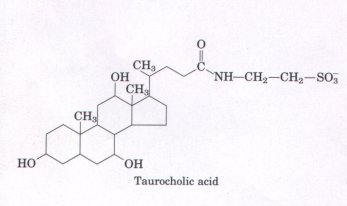
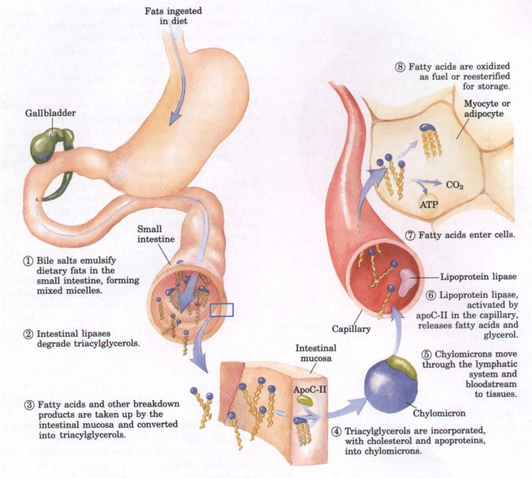
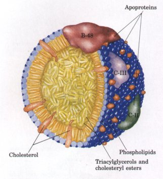
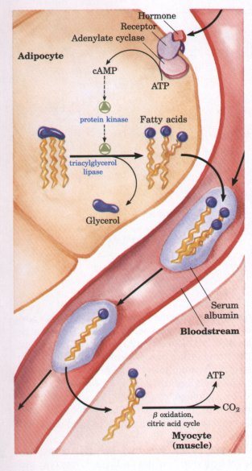
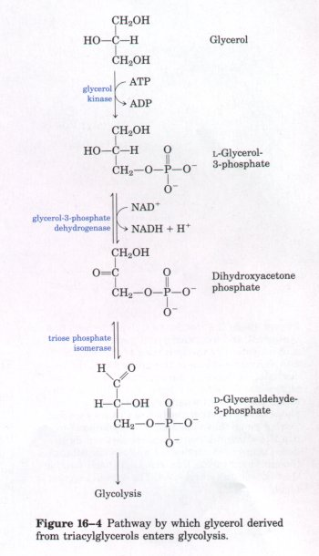
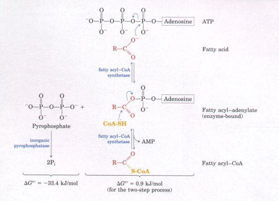
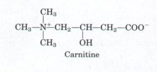
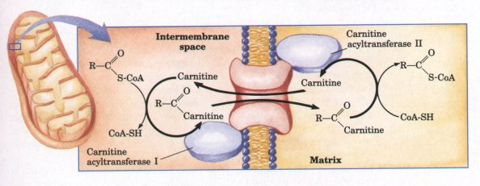

The oxidation of long-chain fatty acids to acetyl-CoA is a central energy-yielding pathway in animals, many protists, and some bacteria. The electrons removed during fatty acid oxidation pass through the mitochondrial respiratory chain, driving ATP synthesis, and the acetyl-CoA produced from the fatty acids may be completely oxidized to CO2 via the citric acid cycle, resulting in further energy conservation. In some organisms, acetyl-CoA produced by fatty acid oxidation has alternative fates. In vertebrate animals, acetyl-CoA may be converted in the liver into ketone bodies-water-soluble fuels exported to the brain and other tissues when glucose is not available. In higher plants, acetyl-CoA from fatty acid oxidation serves primarily as a biosynthetic precursor, and only secondarily as fuel. Although the biological role of fatty acid oxidation differs from organism to organism, the mechanism is essentially the same. This chapter is centered on the four-step process, called β oxidation, by which fatty acids are converted into acetyl-CoA.
In Chapter 9 we described the properties of triacylglycerols (also called triglycerides or neutral fats) that make them especially suitable as storage fuels. The long alkyl chains of their constituent fatty acids are essentially hydrocarbons, highly reduced structures with an energy of complete oxidation (~38 kJ/g) more than twice that for the same weight of carbohydrate or protein. Because of their hydrophobicity and extreme insolubility in water, triacylglycerols are segregated into lipid droplets, which do not raise the osmolarity of the cytosol and, unlike polysaccharides, do not contain extra weight as water of solvation. The relative chemical inertness of triacylglycerols allows their intracellular storage in large quantity without the risk of undesired chemical reactions with other cellular constituents.
The same properties that make triacylglycerols good storage compounds present problems in their role as fuels. Because of their insolubility in water, ingested triacylglycerols must be emulsified before they can be digested by water-soluble enzymes in the intestine, and triacylglycerols absorbed in the intestine or mobilized from storage tissues must be carried in the blood by proteins that counteract their insolubility. The relative stability of the C-C bonds in a fatty acid is overcome by activation of the carboxyl group at C-1 by attachment to coenzyme A, which allows stepwise oxidation of the fatty acyl group at the C-3 position. This latter carbon atom is also called the beta (β) carbon in common nomenclature, from which the oxidation of fatty acids gets its common name: β oxidation.
We begin this chapter with a brief discussion of the sources of fatty acids and the routes by which they are carried to the site of their oxidation, with special emphasis on the case of vertebrate animals. The chemical steps of fatty acid oxidation in mitochondria are then described. Three stages in this process can be distinguished: the oxidation of long-chain fatty acids to two-carbon fragments, in the form of acetyl-CoA; the oxidation of acetyl-CoA to CO2 via the citric acid cycle (Chapter 15); and the transfer of electrons from reduced electron carriers to the mitochondrial respiratory chain (Chapter 18). Our emphasis in this chapter is on the first of these stages. We consider the simple case in which a fully saturated fatty acid with an even number of carbon atoms is degraded to acetyl-CoA, then we look briefly at the extra transformations necessary for the degradation of unsaturated fatty acids and of fatty acids with an odd number of carbons. Finally, we discuss variations on the ,3-oxidation theme that occur in specialized organelles-peroxisomes and glyoxysomes. The chapter concludes with the description of an alternative fate for the acetyl-CoA formed by β oxidation in vertebrates: the production of ketone bodies in the liver.
Cells that derive energy from the oxidation of fatty acids may obtain those fatty acids from three sources: fats in the diet, fats stored in cells as lipid droplets, and (in animals) fats newly synthesized in one organ for export to another. Some organisms use all three sources under various circumstances, whereas others obtain fatty acids from only one or two of these sources. Vertebrates, for example, obtain fats in the diet, mobilize fats stored in specialized tissue (adipose tissue), and convert excess dietary carbohydrates to fats in the liver for export to other tissues. On the average, 40% or more of the daily energy requirement of humans in highly industrialized countries is supplied by dietary triacylglycerols (although most nutritional guidelines recommend that no more than 30% of the daily caloric intake be from fats). Triacylglycerols provide more than half the energy requirements of some organs, particularly the liver, heart, and resting skeletal muscle. Stored triacylglycerols are virtually the sole source of energy in hibernating animals and migrating birds. Protists obtain fats by consuming organisms lower in the food chain, and some also store fats in cytosolic lipid droplets. Higher plants mobilize fats stored in seeds during the process of germination, but do not otherwise depend on fats for energy.

Before ingested triacylglycerols can be absorbed through the intestinal wall, they must be converted from insoluble macroscopic fat particles 3 into finely dispersed microscopic micelles. Bile salts such as taurocholic acid are synthesized from cholesterol in the liver, stored in the gallbladder, and released into the small intestine after ~ingestion of a fatty meal. These amphipathic compounds act as biological deter- gents, converting dietary fats into mixed micelles of bile salts and tri- acylglycerols (Fig. 16-l, step 1). Micelle formation enormously in- creases the fraction of lipid molecules accessible to the action of water-soluble lipases in the intestine, and lipase action converts triacylglycerols into monoacylglycerols (monoglycerides) and diacylglycerols (diglycerides), free fatty acids, and glycerol (step 2 ). These products of lipase action diffuse into the epithelial cells lining the intestinal surface (the intestinal mucosa) (step 3 ), where they are reconverted to triacylglycerols and packaged with dietary cholesterol and specific proteins into lipoprotein aggregates called chylomicrons (Fig. 16-2; see also Fig. 16-1, step 4).
Figure 16-1 Uptake of dietary lipid in the intestine of a vertebrate animal, and delivery of fatty acids to muscle and adipose tissues. The eight steps are discussed in the text.
| Apolipoproteins are
lipid-binding proteins in the blood, responsible for the
transport of triacylglycerols, phospholipids,
cholesterol, and cholesteryl esters between organs.
Apolipoproteins ("apo" designates the protein
in its lipid-free form) combine with various lipids to
form several classes of lipoprotein particles, spherical
aggregates with hydrophobic lipids at the core and
hydrophilic protein side chains and lipid head groups at
the surface. Various combinations of lipid and protein
produce particles of different densities, ranging from
chylomicrons and very low-density lipoproteins (VLDL) to
very high-density lipoproteins (VHDL), which may be
separated by ultracentrifugation. The structures and
roles of these lipoprotein particles in lipid transport
are detailed in Chapter 20. The protein moieties of lipoproteins act as points of specific recognition by receptors on cell surfaces. In lipid uptake from the intestine (Fig. 16-1), chylomicrons, which contain apoprotein C-II (apoC-II), move from the intestinal mucosa into the lymphatic system, from which they enter the blood and are carried to muscle and adipose tissue (step 5 ). In the capillaries of these tissues, the extracellular enzyme lipoprotein lipase is activated by apoC-II. This enzyme hydrolyzes triacylglycerols to fatty acids and glycerol (step 6, which are taken up by cells in the target tissues (step 7 ). In muscle, the fatty acids are oxidized for energy; in adipose tissue, they are reesterified for storage as triacylglycerols (step 8). |
 Figure 16-2 Molecular structure of a chylomicron. The surface is covered with a layer of phospholipids, with head groups facing the aqueous phase. Ti-iacylglycerols sequestered in the interior make up more than 80% of the mass. Several apoproteins that protrude from the surface act as signals in the uptake and metabolism of chylomicron contents. The diameter of chylomicrons ranges from about 100 to about 500 nm. |
The remnants of chylomicrons, depleted of most of their triacylglycerols but still containing cholesterol and the apoproteins apoE and apoB-48, travel in the blood to the liver, where they are taken up by endocytosis, triggered by their apoproteins. Triacylglycerols that enter the liver by this route may be oxidized to provide energy or to provide precursors for the synthesis of ketone bodies, as described later in this chapter. When the diet contains more fatty acids than are needed immediately for fuel or as precursors, they are converted into triacylglycerols in the liver, and the triacylglycerols are packaged with specific apolipoproteins into VLDLs. VLDLs are transported in the blood from the liver to adipose tissues, where the triacylglycerols are removed and stored in lipid droplets within adipocytes.
When hormones signal the need for metabolic energy, triacylglycerols stored in adipose tissue are mobilized (brought out of storage) and transported to those tissues (skeletal muscle, heart, and renal cortex) in which fatty acids can be'oxidized for energy production. The hormones epinephrine and glucagon, secreted in response to low blood glucose levels, activate adenylate cyclase in the adipocyte plasma membrane (Fig. 16-3), raising the intracellular concentration of cAMP (see Fig. 14-18). A cAMP-dependent protein kinase, in turn, phosphorylates and thereby activates hormone-sensitive triacylglycerol lipase, which catalyzes hydrolysis of the ester linkages of triacylglycerols. The fatty acids thus released diffuse from the adipocyte into the blood, where they bind to the blood protein serum albumin. This protein (Mr 62,000), which constitutes about half of the total serum protein, binds as many as 10 fatty acids per protein monomer by noncovalent interactions. Bound to this soluble protein, the otherwise insoluble fatty acids are carried to tissues such as skeletal muscle, heart, and renal cortex. Here, fatty acids dissociate from albumin and diffuse into the cytosol of the cells in which they will serve as fuel.
 Figure 16-3 Mobilization of triacylglycerols stored in adipose tissue. Low levels of glucose in the blood trigger the mobilization of triacylglycerols through the action of epinephrine and glucagon on the adipocyte adenylate cyclase. The subsequent steps in mobilization are described in the text. |
 Figure 16-4 Pathway by which glycerol derived from triacylglycerols enters glycolysis. |
About 95% of the biologically available energy of triacylglycerols resides in their three long-chain fatty acids; only 5% is contributed by the glycerol moiety. The glycerol released by lipase action is phosphorylated by glycerol kinase (Fig. 16-4), and the resulting glycerol-3phosphate is oxidized to dihydroxyacetone phosphate. The glycolytic enzyme triose phosphate isomerase converts this compound to glyceraldehyde-3-phosphate, which is oxidized via glycolysis.
The enzymes of fatty acid oxidation in animal cells are located in the mitochondrial matrix, as demonstrated in 1948 by Eugene P. Kennedy and Albert Lehninger. The free fatty acids that enter the cytosol from the blood cannot pass directly through the mitochondrial membranes, but must first undergo a series of three enzymatic reactions. The first is catalyzed by a family of isozymes present in the outer mitochondrial membrane, acyl-CoA synthetases, which promote the general reaction
Fatty acid + CoA + ATP  fatty
acyl-CoA + AMP + PPi
fatty
acyl-CoA + AMP + PPi
The different acyl-CoA synthetase isozymes act on fatty acids of short, intermediate, and long carbon chains, respectively. Acyl-CoA synthetase catalyzes the formation of a thioester linkage between the fatty acid carboxyl group and the thiol group of coenzyme A to yield a fatty acyl-CoA; simultaneously, ATP undergoes cleavage to AMP and PP;. Recall our description of this reaction in Chapter 13 to illustrate how the free energy released by cleavage of phosphoric acid anhydride bonds in ATP could be coupled to the formation of a high-energy compound (see Fig. 13-10). The reaction occurs in two steps, and involves a fatty acyl-adenylate intermediate (Fig. 16-5).
 |
Figure 16-5 The reactions catalyzed by acyl-CoA synthetase and inorganic pyrophosphatase. Fatty acid activation by the formation of the fatty acylCoA derivative occurs in two steps. First, the carboxylate ion displaces the outer two (β and γ) phosphates of ATP to form a fatty acyl-adenylate, the mixed anhydride of a carboxylic acid and a phosphoric acid. The other product is PPi, an excellent leaving group that is immediately hydrolyzed to two Pi, pulling the reaction in the forward direction. Coenzyme A carries out nucleophilic attack on the mixed anhydride, displacing AMP and forming the thioester fatty acyl-CoA. The overall reaction is highly exergonic. |

Fatty acyl-CoAs, like acetyl-CoA, are high-energy compounds; their hydrolysis to free fatty acid and CoA has a large, negative standard free-energy change ( ΔG°' = -31 kJ/mol). The formation of fatty acyl-CoAs is made more favorable by the hydrolysis of two highenergy bonds in ATP; the pyrophosphate formed in the activation reaction is immediately hydrolyzed by a second enzyme, inorganic pyrophosphatase (Fig. 16-5), which pulls the preceding activation reaction in the direction of the formation of fatty acyl-CoA. The overall reaction isFatty acid + CoA + ATP  fatty acyl-CoA +
AMP + 2Pi (16-1)
fatty acyl-CoA +
AMP + 2Pi (16-1)
ΔG°' = -32.5 kJ/mol
Fatty acyl-CoA esters formed in the outer mitochondrial membrane do not cross the inner mitochondrial membrane intact. Instead, the fatty acyl group is transiently attached to the hydroxyl group of carnitine and the fatty acyl-carnitine is carried across the inner mitochondrial membrane by a specific transporter (Fig. 16-6). In this second enzymatic reaction required for fatty acid movement into mitochondria, carnitine acyltransferase I, present on the outer face of the inner membrane, catalyzes transesterification of the fatty acyl group from coenzyme A to carnitine. The fatty acyl-carnitine ester crosses the inner mitochondrial membrane into the matrix by facilitated diffusion through the acyl-carnitine/carnitine transporter.

Figure 16-6 Fatty acid entry into mitochondria via the acyl-carnitine/carnitine transporter. After its formation at the outer surface of the inner mitochondrial membrane, fatty acyl-carnitine moves into the matrix by facilitated diffusion through the transporter. In the matrix, the acyl group is transferred back to CoA, freeing carnitine to return to the intermembrane space via the same transporter. The acyltransferase I and II enzymes are bound to the outer and inner surfaces, respectively, of the mitochondrial inner membrane. This entry process is the rate-limiting step for oxidation of fatty acids in mitochondria, as discussed later in this chapter.
In the third and final step of the entry process, the fatty acyl group is enzymatically transferred from carnitine to intramitochondrial coenzyme A by carnitine acyltransferase II. This isozyme is located on the inner face of the inner mitochondrial membrane, where it regenerates fatty acyl-CoA and releases it, along with free carnitine, into the matrix (Fig. 16-6). Carnitine reenters the space between the inner and outer mitochondrial membranes via the acyl-carnitine/carnitine transporter.
This three-step process for transferring fatty acids into the mitochondrion has the effect of separating the cytosolic and mitochondrial pools of coenzyxne A, which have different functions. The mitochondrial pool of coenzyme A is largely used in oxidative degradation of pyruvate, fatty acids, and some amino acids, whereas the cytosolic pool of coenzyme A is used in the biosynthesis of fatty acids (Chapter 20).
Once inside the mitochondrion, the fatty acyl-CoA is ready for the oxidation of its fatty acid component by a set of enzymes in the mitochondrial matrix.